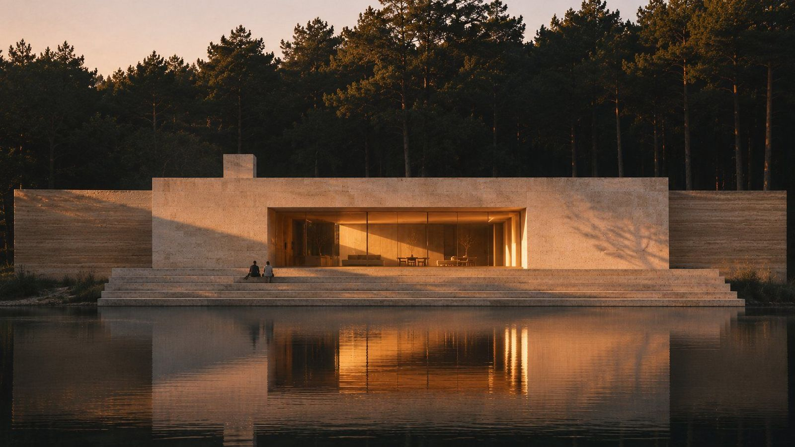
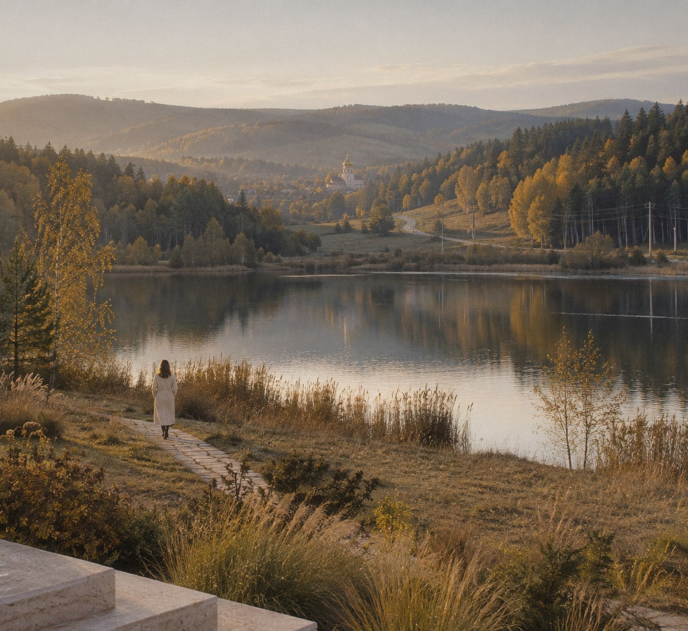
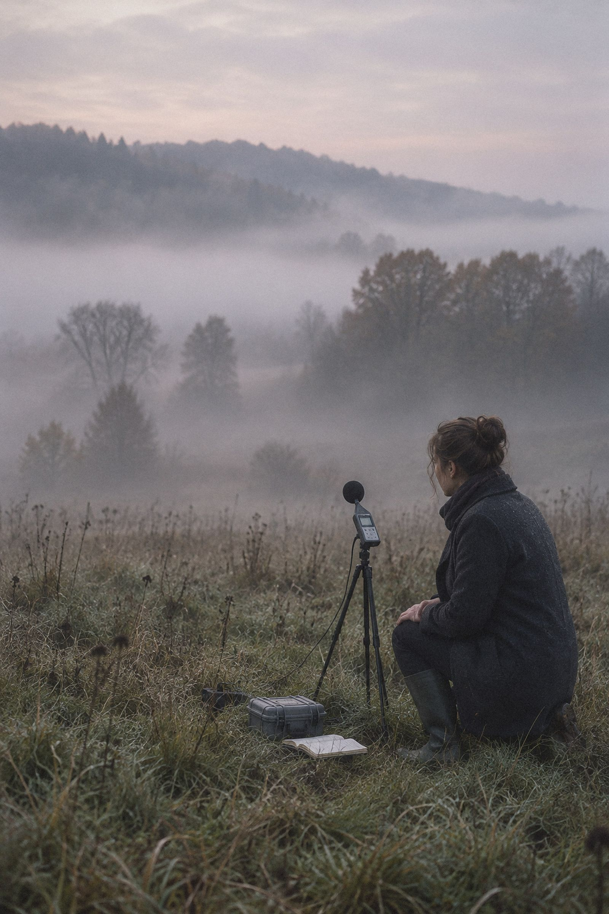

Architecture
of silence.
We design homes where the loudest thing is the rain. In quiet places, thirty minutes from everything.
25 dB inside
30 min to everything
49.8397° N
24.0297° E
LULL_HOUSE.JPGPINE_COURT.JPGHOLLOW.JPG
Scroll ↓
68 → 25 dB
02 / 11 · Statement62 dB
We don't build  far from the city.
far from the city.
We build  far from the noise.
far from the noise.
Silence is not a location
It is a decision
Silence is not a location. It is a decision made at every step: which plot, which way the house turns, how thick the walls are, where you sleep.
STATEMENT.TXT
02 / 11 · Lull House, forest edge62 → 55 dB
Silence is not a location. It is a decision.
Which plot · which way the house turns · how thick the walls are · where you sleepFOREST_EDGE.JPG
03 / 11 · Measured55 dB
Silence has a number.
We measure it, design for it and write it into the contract. Inside a TYSHA bedroom it is 25 dB, quieter than a whisper.
70Evening traffic
under your window
55An open-plan office
40A city flat at night,
windows closed
30A whisper
25dBA TYSHA bedroom
Written in the contract
 CORRIDOR.JPG21 dB
CORRIDOR.JPG21 dB
04 / 11 · Method49 dB

01LAND.JPG
Land
We find quiet before you buy it. Every plot gets a seven-day silence audit: mornings, nights, weekends.

02FORM.JPG
Form
The house turns its back to the road. Courtyards, folds and deep walls stop sound before it reaches you.

03MATTER.JPG
Matter
Rammed earth, timber, stone, wool. Materials that absorb, not echo.

04RHYTHM.JPG
Rhythm
Bedrooms deep inside, the kitchen facing morning light, one quiet room in every home.
05 / 11 · Location44 dB
Quiet,
not far.
Before we draw a single line, every plot passes one test. If everyday life is more than thirty minutes away, we walk away.
School12MIN
Hospital18MIN
City centre25MIN
Airport45MIN
Average across our housesThe 30-minute rule. No exceptions.

The road is there. You just can't hear it.PATH_TO_VALLEY.JPG
A day, measured06:10 → 23:40A day, measured06:10 → 23:40A day, measured06:10 → 23:40
07 / 11 · Lull House36 dB
A day at Lull House, measured.
31
dB · 06:10
08 / 11 · Process33 dB
-
01
Silence audit
Sound meters on the plot, day and night. You get a sound map and an honest answer.
7 days

-
02
Concept
We turn the house away from noise and towards light. You see it in drawings and models.
6 weeks

-
03
Design & acoustics
Architect and acoustic engineer side by side. Every wall and window checked against the number.
4 months
-
04
Construction
We are on site every week. Acoustic tests at three points of the build, not once at the end.
12–18 months
-
05
The first night
We measure the bedroom together with you. The number goes into your house file.
25 dB

Voices
09 / 11 · Voices30 dB
“The first night we woke up at 3 a.m. because it was too quiet. Now we can't sleep anywhere else.”
Olena & Mark · Lull House
“We moved twenty minutes out of the city and got two hours of our day back.”
Andriy · Pine Court
Studio in numbers
10 / 11 · Studio27 dB
12Years of quiet work
38Houses built
6Projects a year, never more
0Homes near a highway